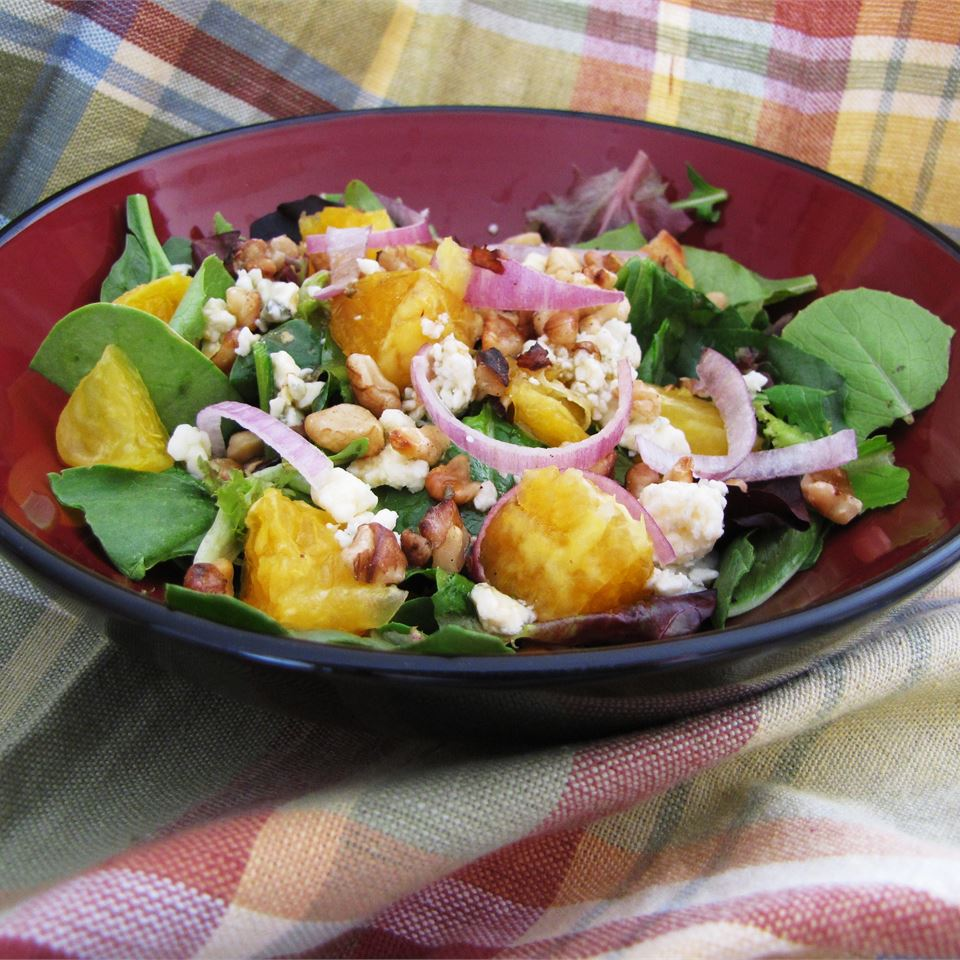

Orange, Walnut, Gorgonzola and Mixed Greens Salad with Fresh Citrus Vinaigrette

Orange, Walnut, Gorgonzola and Mixed Greens Salad with Fresh Citrus Vinaigrette
-
¾ cup walnut halves
-
10 ounces mixed salad greens with arugula
-
2 large navel oranges, peeled and sectioned
-
½ cup sliced red onion
-
¼ cup olive oil
-
¼ cup vegetable oil
- ⅔ cup orange juice
- ¼ cup white sugar
- 2 tablespoons balsamic vinegar
- 2 teaspoons Dijon mustard
- ¼ teaspoon dried oregano
- ¼ teaspoon ground black pepper
- ¼ cup crumbled Gorgonzola cheese
- Place the walnuts in a skillet over medium heat. Cook 5 minutes, stirring constantly, until lightly browned.
- In a large bowl, toss the toasted walnuts, salad greens, oranges, and red onion.
- In a large jar with a lid, mix the olive oil, vegetable oil, orange juice, sugar, vinegar, mustard, oregano, and pepper. Seal jar, and shake to mix.
- Divide the salad greens mixture into individual servings. To serve, sprinkle with Gorgonzola cheese, and drizzle with the dressing mixture.